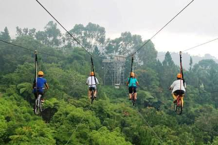
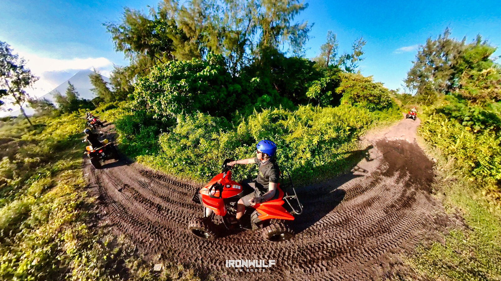
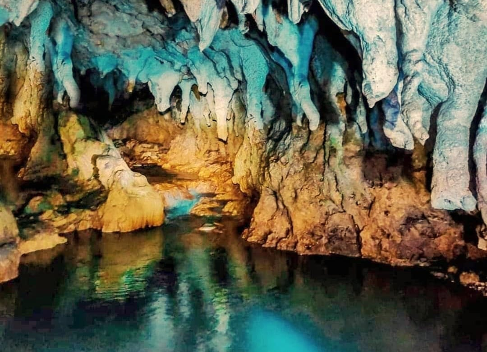

Get your heart racing in Davao del Sur! Soar above the tree canopy on the giant ziplines at Camp Sabros, or rent an ATV to navigate the rugged highland terrains. For those who love exploring the underground, spelunking in the various limestone caves scattered across the province, such as those in the Matanao area, offers an unforgettable subterranean adventure.
Soar above the tree canopy on some of the highest and longest ziplines in the country.
Navigate rugged, muddy highland terrains on guided ATV and motocross adventures.
Gear up and crawl through the fascinating limestone cave systems of Matanao.
If you are looking to get your adrenaline pumping, Davao del Sur is the place to be. Beyond trekking, the province offers a massive variety of extreme outdoor sports set against the backdrop of untouched rainforests and deep valleys. From the chilly highland resorts of Kapatagan offering aerial adventures to the deep, echoing chambers of the Su'bon Cave, there is an adventure scaled for every bravery level. Whether you are flying through the air, riding through the mud, or rappelling down a rock face, safety-certified local operators are ready to guide your journey.

Fly tandem across an 800-meter drop at Camp Sabros and feel the rush of the mountain wind.

Rent an All-Terrain Vehicle and conquer the bumpy, scenic trails around the foothills of Mt. Apo.

Discover impressive stalactite formations and underground streams in the caves of Matanao.
Fly to Francisco Bangoy International Airport in Davao City, then take a bus south.
November to May is the dry season — ideal for outdoor activities and beach trips.
Davao del Sur offers affordable accommodations, food, and transport options.